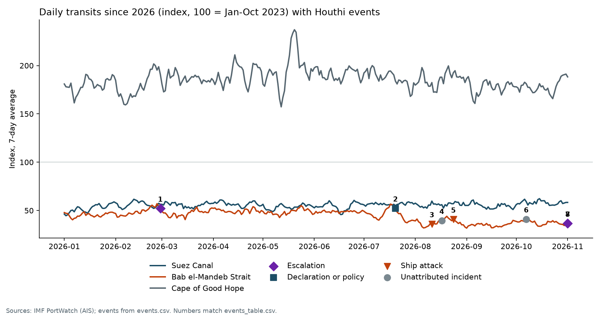

UPI11 Aug 2026
Six dead after missile strike on cargo ship
The Yemeni government said Houthi missiles hit a food-carrying ship in the Bab al-Mandab Strait. A second missile reportedly killed two rescuers.
Read the originalHow much did ship traffic through Suez and Bab el-Mandeb fall once the attacks began, how much moved to the Cape of Good Hope, and what changed in 2026?
Ships between Asia and Europe pass Bab el-Mandeb and the Suez Canal, or sail around Africa. The attacks happen at the strait, not at the canal, so the strait decides which route ship owners choose.
Schematic, not to scale. Solid line: Suez route. Dotted line: Cape route. Dashed circle: where the attacks are concentrated.
Attacks began on 19 November 2023 with the seizure of the Galaxy Leader. The UN Security Council demanded an end on 10 January 2024. After the Gaza ceasefire began on 10 October 2025, the Houthis signalled they had stopped attacking Israel and Red Sea shipping, though many shippers kept going around the Cape.
The US and Israel struck Iran on 28 February 2026, and the Houthis warned of new Red Sea attacks. Hormuz has been effectively closed since, and Yanbu on the Red Sea became Saudi Arabia's main route for oil exports.
The Houthis announced a blockade of Saudi-linked shipping on 20 July. Traffic through the southern Red Sea has been lower since, and the port of Mokha has been closed to commercial traffic after repeated missile strikes, according to the JMIC naval information centre.

Daily transits through Suez, Bab el-Mandeb and the Cape of Good Hope, 7-day average, indexed so that January to October 2023 equals 100. Numbered markers match the event log below.

Source: IMF PortWatch, based on satellite AIS data from the UN Global Platform. Counts are ships detected, not cargo tonnage.
Each entry links to its source. Incidents without a confirmed attacker, and government claims, are labelled as such.
Houthis seize the Galaxy Leader and its crew. Start of the shipping campaign.
Source: UN Security Council resolution 2722UN Security Council adopts resolution 2722 (11 votes in favour, 4 abstentions), demanding the Houthis stop attacks on merchant ships.
Source: UN Digital LibraryGaza ceasefire begins. By November the Houthis signal they have stopped attacks on Israel and Red Sea shipping.
Source: Associated Press, via Times of IsraelUS and Israeli strikes on Iran begin the Iran war. The Houthis warn of missile and drone attacks in the Red Sea.
Source: BusinessTodayHouthis announce a blockade of Saudi-linked shipping.
Source: Seatrade MaritimeCargo ship Tihamah hit by missiles in the Bab al-Mandab Strait. The Yemeni government says six people died and blames the Houthis. The Houthis had not commented at the time.
Source: UPIUnmanned cargo ship hit by several unknown projectiles about 40 nm southeast of Al Mokha and declared a constructive total loss.not attributed
Source: Seatrade Maritime, citing UKMTOTanker struck about 63 nm west of Yanbu. The Houthis claim the strike on Bahri's Amzan. Bahri confirms an incident and says the crew are safe.
Source: Al JazeeraArmed small craft fires on the container ship CUL Klang near Mokha. No injuries. No group claimed it, and a British defence official said UKMTO judged it neither piracy nor Houthi-related.not attributed
Source: Kuehne+Nagel shipping news; MerejaSaudi-led coalition announces an operation against resources the Houthis use for attacks.
Source: Gulf NewsYemen's government claims 21 IRGC and Hezbollah agents help direct Houthi operations.government claim
Source: The NationalFour reports I relied on, summarised in my own words with a link to the original.
The Yemeni government said Houthi missiles hit a food-carrying ship in the Bab al-Mandab Strait. A second missile reportedly killed two rescuers.
Read the originalThe Houthis claimed a ballistic missile strike on a Bahri tanker. Bahri confirmed an incident and said all crew were safe.
Read the originalThe Saudi-led coalition said it struck resources the Houthis use for attacks, citing threats to civilians and to shipping in the southern Red Sea.
Read the originalThe government says 21 IRGC and Hezbollah agents are involved. This is an allegation, and the report also notes a Houthi push toward the Bab al-Mandeb coast since September.
Read the originalHeadlines on the cutouts are my own descriptions, not the outlets' wording. The newspaper styling is decorative.